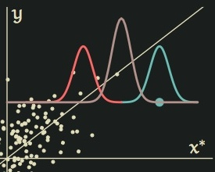

Dynamic Causal Inference

Traditional single-shot causal inference models, which look at the
effects of a single action at a single point in time, are an
invaluable tool for political scientists. In many cases, though,
actions unfold over time, as political actors react to a shifting
state of affairs. Single-shot methods leave political scientists
with no way of extracting meaningful causal inferences about these
dynamic processes. With dynamic data, regression and matching
methods force a choice between two pernicious sources of bias,
unable to simultaneously correct for both. To avoid these problems,
I introduce a framework for dynamic causal inference and utilize
marginal structural models (MSM) to estimate dynamic
causal effects. I take the effectiveness of “going negative” as a
motivating example, as candidates change their strategy over the
course of the electoral calendar. Furthermore, I provide practical
guidance for these models, introducing diagnostic tools and a
sensitivity analysis framework for their crucial, untestable
assumptions.
Multiple Overimputation: A Unified
Approach to Measurement Error and Missing Data

Social scientists typically devote considerable effort to reducing measurement error during data collection only to ignore the issue during data analysis. Although many statistical methods have been proposed for reducing measurement error-induced biases, few have been widely used because of implausible assumptions, high levels of model dependence, difficult computation, or inapplicability with multiple mismeasured variables. We develop an easy-to-use alternative that generalizes the popular multiple imputation (MI) framework so that it treats missing data problems as a special case of extreme measurement error and corrects for both. Like MI, the proposed "multiple overimputation" (MO) framework is a simple two-step procedure. First, multiple (≈5) completed copies of the dataset are created where cells measured without error are held constant, those missing are imputed from the distribution of predicted values, and cells (or entire variables) with measurement error are "overimputed," that is imputed from a predictive distribution with observation-level priors defined by the mismeasured values and available external information, if any. In the second step, analysts can then run whatever statistical method they would have run on each of the overimputed datasets as if there had been no missingness or measurement error; the results are then combined via a simple procedure.
Smoothing Across Spaces in Dynamic Linear Models
The dynamics of presidential elections are usually monitored with
state- and national-level polling data. Since polls are not conducted
in every state on every day, we usually smooth across time in some way
to make inferences; the support for the Democrat probably will not
change drastically from day to day. But when support does change, how
should it change? I introduce an extension of the usual Dynamic Linear
Model to smooth time-trends across the political space. That is, with
this model, two states that are politically similar should have
similar dynamics of support.